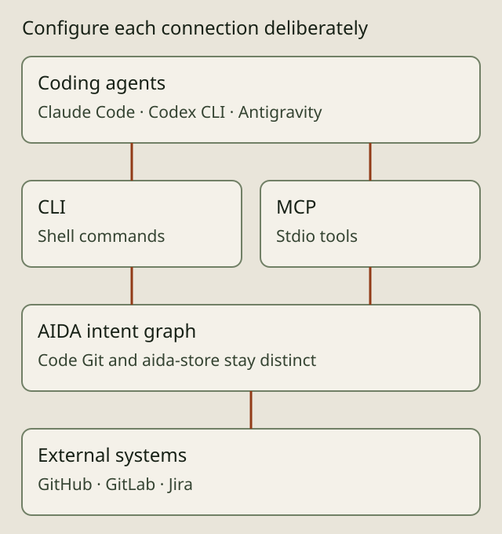

THE GOVERNED SOFTWARE FACTORY
Connect agents and project tools

AIDA provides a shared intent graph around the coding agents and repository tools a project configures. It is alpha software for Linux. Integration availability does not grant a role, authorize a write or make systems running under the same Unix user independent security principals.
Choose the agent surface
Agents with shell access can use the AIDA CLI. MCP clients can launch aida mcp-serve as a stdio server and use its tools and resources. The client setup matrix records the setup surface for individual clients. Claude Code, Codex CLI and Antigravity have distinct launch, configuration and containment behavior; a working setup for one is not proof of parity for another.
aida init prepares the selected project footprint. MCP registration is opt-in with --with-mcp; it is not an automatic consequence of initialization. Inspect aida init --help and follow the operator setup guide before creating specs in a new clone. Configure permissions and project policy deliberately.
Keep code and intent together
Source history lives in the code repository. The Git-canonical requirement graph travels on the separate aida-store branch; a derived read cache supports queries. Code traces and commit trailers connect the two histories. Local leases, review evidence and authority context have separate scope and retention. The workflow guide illustrates those responsibilities; the storage reference covers attachment and synchronization.
Configure external systems explicitly
The CLI exposes GitHub, GitLab and Jira integration commands, alongside forge lifecycle operations. Issue synchronization and shipping a pull or merge request are different operations. Each needs its own supported configuration, credentials and applicable permissions. Inspect the installed command help and the integrations reference before enabling a bridge; review its intended direction and scope before applying writes.
AIDA does not promise every vendor feature, automatic credential provisioning or unattended deployment. A connector's existence does not prove that it is configured or that a remote operation succeeded. Verify the resulting remote state and retain the evidence needed for the project.
Start with the smallest connection
Begin with one coding agent and one repository using the getting-started guide. Inspect a bounded change through trust and evidence before adding another integration. The portable showcase files can be read locally; this documentation change does not publish the owner-private preview or alter its audience.
Source and inspection
The MCP implementation, CLI integrations reference and forge providers guide are starting points for checking the installed surface. Use aida mcp-serve --help, aida github --help, aida gitlab --help and aida jira --help for exact commands and flags.